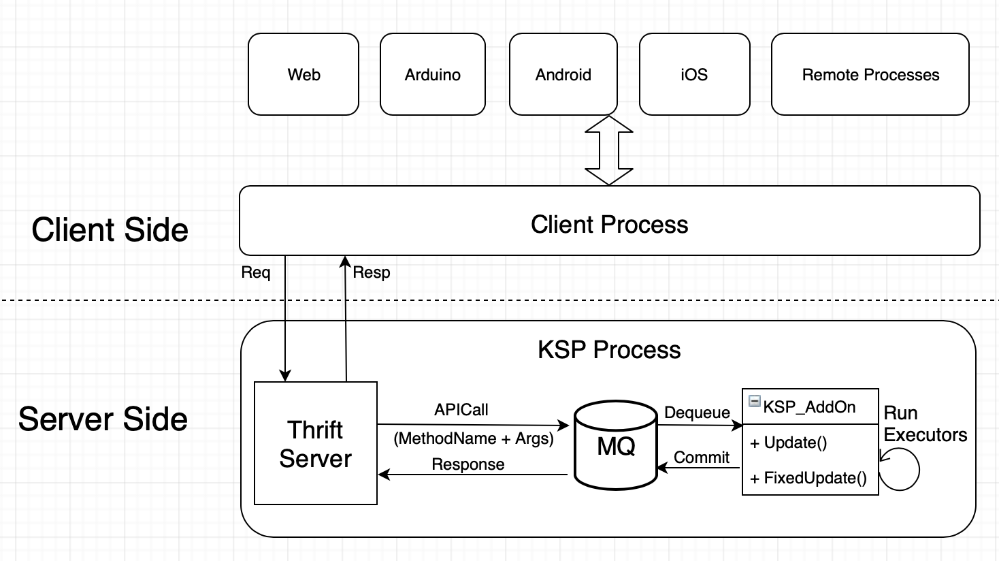

Kift
Thrift(v0.12.0) plugin for Kerbal Space Program(v1.7.3+).
I tried to use GRPC at first, but it appears that GRPC requires .NET Framework 4.5+, and unfortunately, KSP is built on .NET Framework 3.5, which is quite old.
Architecture

Kift starts a Thrift server inside of KSP process. The server receives requests, then send them to a Message Queue. A KSP addon will dequeue requests from the queue, and run the corresponding Executor. The server will wait until the response to a request is returned.
Supported languages
Theoritically, any programming language supported by Thrift v0.12.0 is supported by Kift.
Languages supported by Thrift v0.12.0:
C, C++, Go, Java, Python, PHP, Ruby, Erlang, Perl, Haskell, C#, Cocoa, JavaScript, Node.js, Smalltalk, OCaml and Delphi, etc.
Getting Started
1, Install Kift
Download Kift.zip, copy the Kift folder in zip file into "Kerbal Space Programe/GameData" directory.
Now the server side is ready.
2, Install Thrift, and generate stub codes
To interact with the Thrift server within KSP process, you have to write your own client code.
Thrift is a software framework, for scalable cross-language services development. With the help of Thrift, you can write client code in any programming language, as long as it's supported by Thrift.
APIs provided by Kift are defined by the IDL file "service.thrift" in folder "Kift".
Download a copy of Thrift v0.12.0, then generate stub codes with following command:
thrift --gen <language> <Thrift filename>
For example, if you're using C#, then generate C# stub codes with
$thrift -r --gen csharp service.thrift
if you're using Golang, then run
$thrift -r --gen go service.thrift
3, Connect to Thrift server, and call Kift APIs
Following lines of code show how to get current vessel info in game:
// The game is started, and MUST be in Flight scene.
// Import KiftServer.dll, or depend on your own generated CSharp stub codes.
using KiftServer;
TTransport transport = new TSocket("localhost", 9090); // Listened port is configable in "Kift/server.cfg"
TProtocol protocol = new TBinaryProtocol(transport);
KiftService.Client client = new KiftService.Client(protocol);
transport.Open(); // Connect to server
KVessel v = client.currentVessel(); // Call API "currentVessel"
Console.WriteLine(v.Name);
Kift APIs
Kift provides two sets of APIs: "InfoSync APIs" and "Command APIs".
"InfoSync APIs" pull infos from the game. "Command APIs" send commands to control vessels/parts/game.
Command APIs are devided into three categories according to the target.
- InfoSync APIs
- Real time snapshot
Read data at real time(approximately), useful when you want to monitor any data, such as height, speed, etc. - GetInfo APIs
Get data from current game, such as current vessel, the part list of a vessel, etc.
- Real time snapshot
- Command APIs
- Vessel Control APIs
APIs to control a vessel, such as pitch/yaw/roll, enable/disable RCS, deploy/restract landing legs, etc. - Part Control APIs
APIs to control a part, such as deploy/restract a solar panel, open/close a cargo bay, etc. - Game Control APIs
APIs to control the game, such as time warp, change camera mode, set/remove maneuver nodes etc.
- Vessel Control APIs
See more about Kift APIs at API Documentation: https://vaporz.github.io/Kift/api/index.html